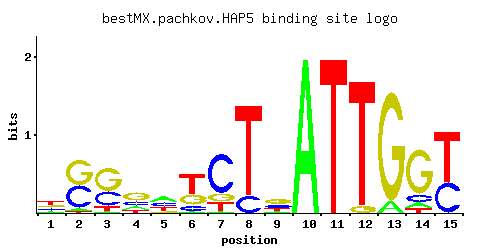

HAP5
YOR358W
Subunit of the heme-activated, glucose-repressed Hap2/3/4/5 CCAAT-binding complex, a transcriptional activator and global regulator of respiratory gene expression; required for assembly and DNA binding activity of the complex
Best-performing DNA-binding model.

View and copy the recommended matrices ↘
A | 0.146 0.046 0.025 0.181 0.386 0.029 0.021 0.001 0.118 1.000 0.001 0.001 0.093 0.085 0.001 C | 0.213 0.443 0.333 0.249 0.308 0.144 0.696 0.159 0.288 0.001 0.001 0.001 0.001 0.117 0.381 G | 0.235 0.488 0.547 0.471 0.093 0.288 0.147 0.001 0.419 0.001 0.001 0.056 0.907 0.736 0.001 T | 0.407 0.022 0.095 0.099 0.213 0.540 0.136 0.841 0.175 0.001 1.000 0.944 0.001 0.062 0.619
A | 14 4 2 18 38 2 2 0 11 100 0 0 9 8 0 C | 21 44 33 24 30 14 69 15 28 0 0 0 0 11 38 G | 23 48 54 47 9 28 14 0 41 0 0 5 90 73 0 T | 40 2 9 9 21 54 13 84 17 0 100 94 0 6 61
A | -0.78 -1.94 -2.55 -0.57 0.19 -2.40 -2.72 -5.77 -1.00 1.14 -5.77 -5.77 -1.24 -1.33 -5.77 C | 0.17 0.90 0.62 0.32 0.54 -0.22 1.35 -0.12 0.47 -5.19 -5.19 -5.19 -5.19 -0.43 0.75 G | 0.27 1.00 1.11 0.96 -0.66 0.47 -0.20 -5.19 0.84 -5.19 -5.19 -1.17 1.62 1.41 -5.19 T | 0.24 -2.68 -1.21 -1.17 -0.41 0.52 -0.86 0.97 -0.60 -5.77 1.14 1.08 -5.77 -1.64 0.66
Alternative candidate matrices 4
Historical matrix candidates from the original ScerTF database. Expand a source to inspect its original logo, scores, and matrix values.
HAP5_AFoat et. al.P = 0.007186View matrix ↘
HAP5_BFoat et. al.P = 0.02613View matrix ↘
HAP5Harbison et. al.P = 0.4836View matrix ↘
HAP5Macisaac et. alP = 0.4836View matrix ↘
Gene-level annotations and interactions.
Genes bound in ChIP-chip experiments 47 genes
YBL074C, YBR012W-A, YBR012W-B, YBR099C, YBR128C, YBR167C, YBR168W, YCR018C-A, YCR019W, YCR054C, YCR076C, YDL013W, YDL152W, YDL170W, YDL171C, YDR048C, YDR142C, YDR210W-D, YDR245W, YDR495C, YDR503C, YDR522C, YEL050C, YER049W, YER174C, YGL001C, YGL132W, YGL187C, YGR024C, YGR263C, YGR265W, YHR011W, YHR051W, YJL003W, YJL004C, YLL027W, YLR105C, YLR168C, YLR169W, YLR171W, YLR220W, YLR435W, YMR194W, YNR050C, YOL091W, YOR005C, YPL207W
Genes affected by TF deletion 94 genes
YCR040W, YGL234W, YNL016W, YOR225W, YGL009C, YLR058C, YBR031W, YMR044W, YOR226C, YGR155W, YOR066W, YOR382W, YDR096W, YHR025W, YOR285W, YOR351C, YPL187W, YER026C, YGR180C, YHR208W, YML023C, YML058W-A, YNL335W, YBR067C, YCR077C, YDR461W, YNL146W, YPR015C, YCL018W, YBR256C, YIL015W, YNL332W, YPL145C, YDR012W, YIL154C, YLR286C, YAL013W, YDL070W, YGR099W, YJR094C, YAL012W, YLR034C, YLR438W, YMR171C, YNL220W, YBR070C, YJL026W, YLR348C, YDR320C, YJL153C, YKL178C, YLR343W, YLR349W, YBL032W, YCL027W, YKL177W, YKL148C, YMR323W, YMR057C, YOL058W, YLR040C, YOR393W, YCL066W, YKL120W, YLR041W, YPL032C, YFL026W, YMR120C, YOR305W, YOR383C, YGL089C, YGR234W, YLR136C, YNL190W, YPL281C, YPR035W, YER040W, YJR004C, YNR044W, YHL004W, YHR018C, YLR299W, YLR303W, YMR006C, YMR186W, YBR053C, YLR302C, YDL121C, YGL032C, YKL069W, YKL164C, YLR180W, YNR055C, YLR359W
Predicted TF–TF partners 2 genes
SKN7, SUT1